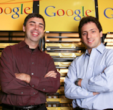
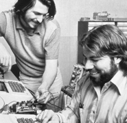
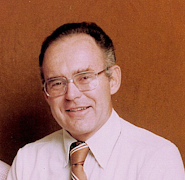
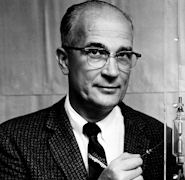
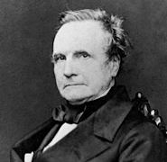
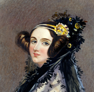

Rich Skrenta is a pioneering computer programmer and entrepreneur best known for creating the first computer virus, Elk Cloner, in 1982. He co-founded the widely-used web directory DMOZ and served as CEO of blekko, a search engine. Skrenta has left a significant mark on computer security and internet search technology.
ICT Hall of Fame

Kevin Mitnick is a renowned former hacker turned cybersecurity consultant and author. In the past, he was known for his criminal hacking activities during the 1980s and 1990s, leading to imprisonment. Today, Mitnick advocates for ethical hacking, offering his expertise to help organizations protect their digital assets and systems.
Jawed Karim, Steve Chen, and Chad Hurley collectively co-founded YouTube, the world's leading online video-sharing platform, in 2005. Their innovative creation revolutionized how people consume and share video content globally, and it was later acquired by Google. They played pivotal roles in shaping the modern digital media landscape.
Mark Zuckerberg is the co-founder and CEO of Facebook, now Meta Platforms, Inc. He started the social media giant in 2004, reshaping global communication. Zuckerberg's influence extends beyond Facebook, encompassing VR and AI technologies. His journey reflects the impact of tech entrepreneurship on modern society.
Linus Torvalds, a Finnish-American software engineer, is best known as the creator and original developer of the Linux kernel, the core component of the open-source Linux operating system. His visionary work has empowered countless individuals and organizations to utilize and contribute to the free and open-source software movement.

Sergey Brin, Larry Page
Sergey Brin and Larry Page co-founded Google in 1998, revolutionizing internet search. Their algorithm, PageRank, set the stage for Google's dominance in the digital realm. The duo's innovation expanded into various technology sectors, making Alphabet Inc., Google's parent company, a global tech giant with a profound impact on society.
Bill Gates, co-founder of Microsoft, is a tech visionary, philanthropist, and business magnate. He played a pivotal role in the personal computer revolution, making Microsoft a global tech leader. Gates and his wife, Melinda, established the Bill & Melinda Gates Foundation, focusing on global health, education, and poverty alleviation.

Steve Jobs, Steve Wozniak
Steve Jobs and Steve Wozniak co-founded Apple Inc. Their creative partnership led to the development of the personal computer, the Macintosh, and groundbreaking products like the iPhone and iPad. Their innovation and design philosophy revolutionized consumer technology and reshaped the way we interact with digital devices, leaving an enduring legacy.

Gordon Moore
Gordon Moore is a co-founder of Intel Corporation and the author of Moore's Law, which predicted the exponential growth in computing power and transistor density. His insights have driven the semiconductor industry, shaping modern technology by enabling smaller, faster, and more powerful electronic devices. Moore's work has had a profound impact on the digital age.
Grace Hopper, a pioneering computer scientist and Navy rear admiral, was instrumental in the development of early computer programming languages, including COBOL. Her innovations, such as the compiler, greatly simplified programming. Hopper's contributions and advocacy for women in computing had a lasting impact on the field, earning her a place in tech history.

William Shockley
William Shockley, a physicist and co-recipient of the Nobel Prize in Physics, co-invented the transistor in 1947, a pivotal invention that revolutionized electronics and led to the development of modern microelectronics. His work at Bell Labs laid the foundation for the semiconductor industry, contributing to the digital revolution.

Charles Babbage
Charles Babbage, a 19th-century English mathematician and inventor, is considered the "father of the computer." He designed the Analytical Engine, an early mechanical computer concept that laid the groundwork for modern computing. Babbage's visionary ideas and contributions to computing theory paved the way for future technological advancements.

Ada Lovelace
Ada Lovelace, an English mathematician and writer, is recognized as the world's first computer programmer. In the mid-19th century, she collaborated with Charles Babbage on the Analytical Engine and wrote extensive notes that included an algorithm for the machine, making her a pioneer in the field of computer science and programming.